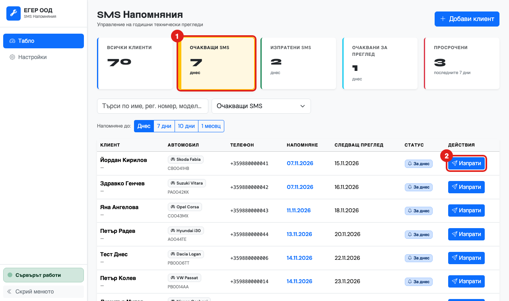
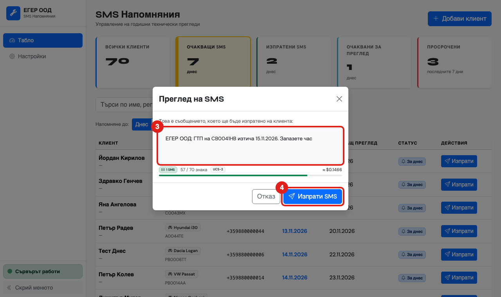

Обратно към таблото
За печат или PDF: натиснете Ctrl + P
Помощ
Как се работи с програмата „SMS Напомняния“. Стъпка по стъпка.
Ръководството още се пише. Готова е само първата тема. Другите идват скоро.
1 Как да изпратя SMS напомняне
Всяко SMS е истинско и струва пари. Програмата не праща нищо сама.
SMS отива само когато вие щракнете „Изпрати SMS“.
Всеки клиент получава едно SMS за година.
Преди да започнете
- Щракнете два пъти върху иконата „ЕГЕР-Сервиз“ на работния плот.
- Изчакайте. Браузърът се отваря сам и показва таблото.
- Погледнете долу вляво. Трябва да пише ● Сървърът работи.
Изберете клиента

- Щракнете веднъж върху картата Очакващи SMS. 1
Под картите се показват клиентите, на които трябва да пратите SMS днес.
- Намерете клиента в списъка.
Списъкът е дълъг? Напишете името или номера на колата в полето „Търси…“.
- На реда на клиента щракнете синия бутон Изпрати. 2
Проверете и изпратете

- Отваря се прозорец „Преглед на SMS“. Прочетете текста. 3
Проверете регистрационния номер и датата. Това е точно текстът, който клиентът ще получи.
- Всичко е вярно? Щракнете Изпрати SMS. 4
Нещо не е вярно? Щракнете Отказ. Нищо не се изпраща.
- Изчакайте 1–2 секунди. Долу вдясно излиза зелено съобщение SMS изпратен до …!
Готово. Какво стана?
- Клиентът изчезва от „Очакващи SMS“.
- Клиентът се появява в картата „Изпратени SMS“.
- На този клиент не може да се прати второ SMS тази година.
Ако нещо не стане
- Няма бутон „Изпрати“.
- Бутонът е само в картата „Очакващи SMS“. Щракнете първо картата (стъпка 4).
- Излиза червено съобщение „Грешка при изпращане…“.
- SMS не е изпратено. Прочетете текста на грешката. Опитайте още веднъж след минута. Ако пак не стане, обадете се на [име и телефон].
- Горе има жълта лента „SMS не могат да се изпращат…“.
- Програмата няма връзка с услугата за SMS. Не можете да поправите това сами. Обадете се на [име и телефон].